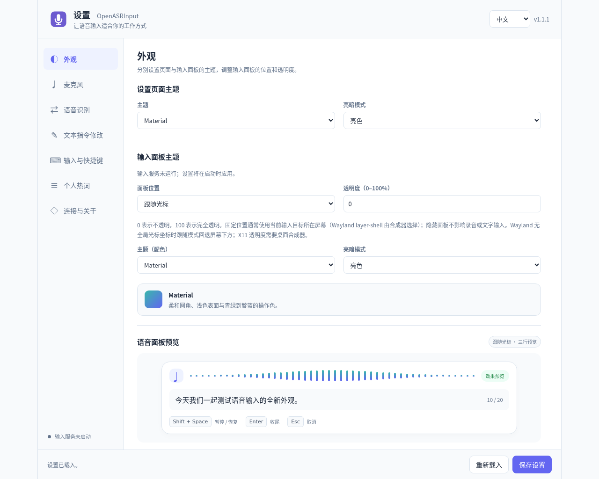
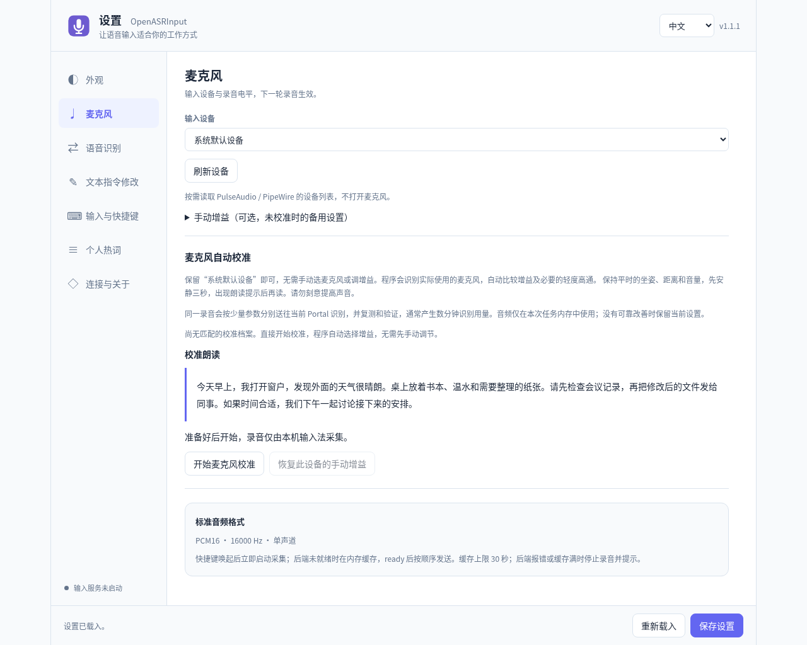
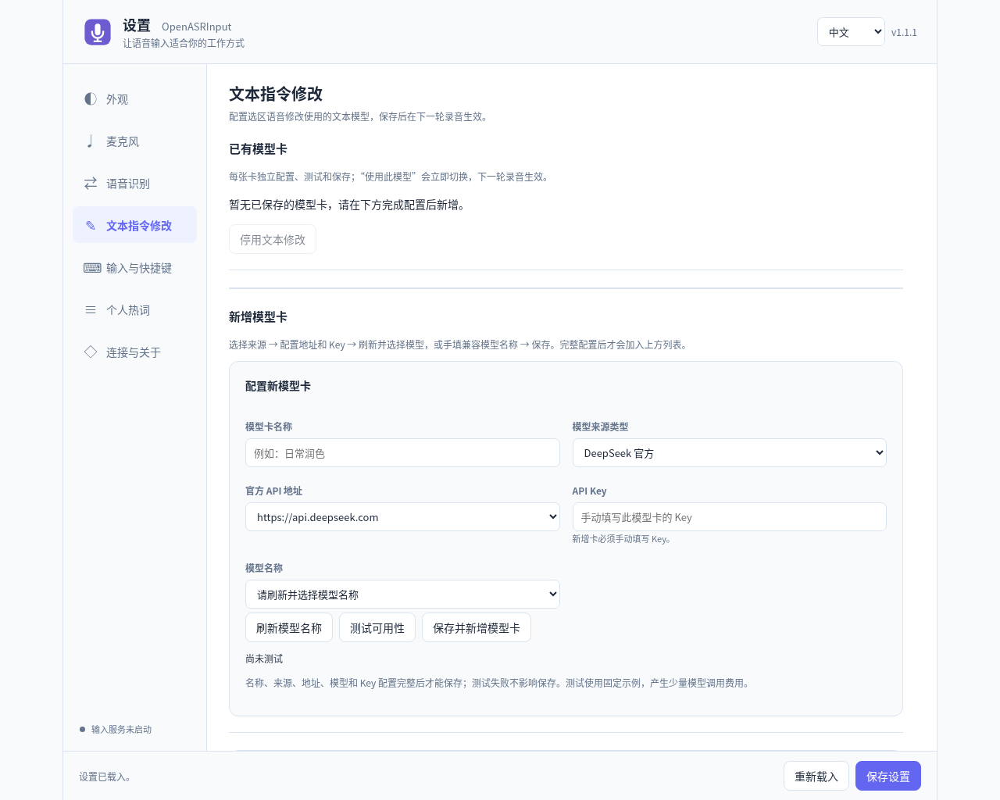

软件介绍
OpenASRInput 是 Windows / Linux 系统语音输入工具：采集麦克风音频，显示识别预览，把稳定文字输入当前应用。OpenASRPortal 是识别网关：连接云端或本地识别服务，为客户端提供统一接口，并管理授权、热词和用量。
普通听写需要 Input + Portal + 一个识别上游。Portal 可装在本机或服务器，连接云端识别服务时无需在电脑上安装识别模型。软件原创代码与文档采用 GPL v3 开源许可。
尚未安装可先阅读安装与配置；已有软件但没有识别服务，可直接阅读上下游接入配置。后面的使用步骤以已接通一个上游为前提。
主要功能
OpenASRInput：桌面语音输入
- 快捷听写：在可编辑控件中启动录音，预览随识别修订，稳定文字逐句上屏。
- 选区语音修改：选中文字，说出润色、缩写或翻译指令，由独立文本模型处理后替换选区。
- 设备与外观：选择麦克风、调整增益、自动校准，设置面板主题、位置、透明度和字号。
- 多服务与热词：保存多张 Portal 卡，按场景切换连接，维护当前 Key 的个人热词。
- 平台集成：Windows 使用原生桥接；Linux 支持 IBus、Fcitx5 和 X11 下的 Fcitx4。

OpenASRPortal：统一识别服务
- 云端上游：本文介绍豆包、百炼、Soniox 与 Boson，支持独立档案、默认选择和候补排序。
- 客户端接入：Input 及按公开 API 开发的程序共用识别能力。
- 授权与预算：为使用者或设备派生 ASR Key，独立设置额度，查看用量并撤销授权。
- 热词与网络：管理个人词表、公共推荐词表和上游 HTTP / HTTPS 代理。
Portal 本身不加载识别模型，实际识别由配置的上游服务完成。
设计架构
数据流与产品分工
Input 与 Portal 各自管理配置、依赖和运行进程，通过公开 HTTP / WebSocket 接口协作。Portal 使用 Python / aiohttp 与独立 SQLite；Input 包括设置网页、录音控制器和平台原生桥接。打开设置页只代表配置服务可用，真实输入还需要录音进程和桥接正常运行。
源码分层
| 层次 | Input | Portal |
|---|---|---|
| 入口与展示 | entrypoints 组装命令行与进程；presentation 提供面板和设置。 | entrypoints 启动服务；api 处理路由与认证；presentation 提供管理页。 |
| 业务与规则 | application 控制录音和提交；domain 校验状态与识别账本。 | application 编排会话、热词与用量；domain 定义配置与能力。 |
| 外部能力 | adapters 连接 Portal 与平台；infrastructure 处理配置、音频和进程；src/native 对接输入框架。 | providers 封装上游协议；storage 管理本产品数据库和密钥保管。 |
识别会话与可靠上屏
- 客户端使用 ASR Key 查询能力和档案，创建会话，获得短期一次性 ticket。
- 连接同源 WebSocket，等待
session.ready，再上传 16 kHz、单声道 PCM16 音频。 transcript.partial替换当前语句预览；transcript.final表示稳定定稿，Input 逐句排队提交。- 停止时发送
audio.end，继续等待尾部定稿和session.finished，再清理本轮资源。
sessionId 区分会话，seq 校验事件顺序，utteranceId / revision 区分语句及修订；重复 final 不重复上屏。Input 另外使用录音轮次、焦点身份和提交 ACK，防止旧结果写到新窗口。确认不明确时保留未确认状态，不盲目重发。
Windows 目标控件和 Linux 输入法框架提供的选区、预编辑与光标定位能力不同。Wayland 面板位置取决于桌面协议，Fcitx4 仅用于 X11。v1 不支持音频续传；结束后继续录音会建立新会话。
认证与数据归属
管理员密码用于 Portal 管理；客户端 ASR Key 用于识别和个人热词；云服务 Key 仅用于 Portal 连接上游。管理密码以随机盐 scrypt 哈希保存，管理 token 默认 30 分钟过期。Key 的认证摘要与供查看的加密副本分开保存，所以备份须保留数据库与保管文件。
Input 保存设备和连接配置；Portal 保存档案、授权、热词与统计，不持久保存录音或转写全文。实际文字属于目标文档。选区语音修改会另外调用单独配置的文本模型。
普通听写
- 确认 Input 已启动，Linux 当前输入框架已启用 OpenASRInput；在普通文本编辑器中结束原输入法的候选选择，点出光标。
- 按 Shift+Space 开始听写，观察波形与录音状态，再说一句短语，例如“今天先整理项目文档，再检查安装说明”。
- 保持目标焦点。预览可能修改字词和标点，这是识别修订，不要反复复制同一句预览。
- 再次按 Shift+Space 停止录音，等待最后定稿和上屏完成，再继续键盘编辑或切换窗口。
- 检查编辑器中的实际文字。若只有面板显示而没有进入文档，查看桥接、焦点与目标控件，而不是重复说同一句。
| 操作 | Linux | Windows |
|---|---|---|
| 普通听写开始 / 结束 | Shift+Space | Shift+Space |
| 选区语音修改开始 / 结束 | Alt+Z | Alt+X |
Linux 还可以用 Enter 正常收尾、Esc 取消未提交部分。Windows 文本修改的实际键位是 Alt+X，不是早期截图里的 Alt+Z。没有选区时，文本修改快捷键可进入普通语音输入。录音中的普通字符和编辑键可能由语音模式消费，结束后再键盘修改会更清楚。
预览、定稿、停止和取消的区别
临时预览可以被新结果替换，稳定 final 才会排队提交。Input 会逐句上屏，不一定等整轮停止才全部写入。面板展示最近一段，Linux 的“20 词缓冲”只是显示范围，不能据此判断完整文本被截断。
正常停止会继续等待尾部结果；取消放弃尚未提交内容，不会撤销已经写进文档的句子。切到别的窗口后，旧结果不会自动投到新窗口；提交确认不明确时先核对目标文档，避免重新录制造成重复。当前单轮时长接近五分钟时会自动收尾，长口述可拆成多轮。
保存设置
Input 设置页默认使用本机 10088 端口，可从应用菜单或 openasrinput settings 打开。Portal 管理页默认是 10087 端口的 /admin；两个页面的职责不同。
| 设置 | 保存动作 | 生效要点 |
|---|---|---|
| Input 外观、设备、框架与通用项 | 底部“保存设置” | 外观可更新运行中面板；设备主要用于下一轮；框架保存后执行 start。 |
| Portal 连接卡 | 新建时“保存并新增 Portal 卡”；修改时“保存此卡”，再“使用此 Portal” | 测试不保存；保存不代表已选为当前。 |
| 文本模型卡 | 新建时“保存并新增模型卡”；修改时“保存模型卡”，再“使用此模型” | 普通听写不需要此卡。 |
| 个人热词 | “保存热词设置” | 同步到当前 Key 的 Portal 表，供后续会话使用。 |
| 麦克风校准 | “应用验证后的配置” | 只有结果满足应用条件时才能替换当前配置。 |
| Portal 上游、额度、公共表 | 各自表单的保存按钮 | 没有保存全部分区的总按钮；测试不自动保存。 |
Input 的“重新载入”读取已保存配置，先处理未保存修改；原生桥接 socket 更改要在下次启动守护进程时生效。切换连接最好等当前录音收尾完成。Input 与 Portal 的右上角均可选择中文 / English，各自记住浏览器选择，切换不会提交或重置表单，也不会翻译用户词语和识别正文。
切换 Portal 与识别档案
- 进入“语音识别”，为不同服务各建一张卡，填写名称、HTTP(S) origin、客户端 Key 和可选配置 ID。
- 点击“测试状态与时延”。它测网关鉴权和配置查询的 HTTP 往返，不是识别首字时延。
- 保存卡片并“使用此 Portal”，核对当前使用标记，再开始新一轮。
例如家庭电脑可以有“本机 Portal”和“远端工作 Portal”两张卡。不要只把同一张卡地址反复改来改去：Key 与服务是配对的，已保存 Key 不回显，也不会自动继承到另一张卡。清除凭据应使用明确的“清除已保存的接入 Key”，不要靠空输入框猜测。
跟随默认：配置 ID 留空，新会话由 Portal 选默认及可用候补。固定档案：填指定 ID，只使用它；该档案停用时不会偷偷切换。修改 Portal 默认只影响后续新会话，不能在一轮中迁移模型。
删除本机卡片不会撤销服务器端 Key。多台设备共用一份 Key 时，热词、预算与撤销状态也共用；需要独立核算或不同词表时让管理员派生不同 Key。远端地址填写服务器的 HTTPS origin，不能用客户端自己的 127.0.0.1。
麦克风与面板
选择设备与增益
“刷新设备”仅枚举麦克风，不会开始录音。经常插拔耳机可选择系统默认设备；固定桌面麦克风可明确指定设备，但拔出后要重新选择。确认没有误选系统回放设备，并先检查硬件静音、系统输入音量和说话距离。
备用输入增益范围为 0.5–3，未匹配校准档案时才使用；匹配档案优先。数字增益不能修复原始削波或消除噪声。音量过载应先降硬件输入，不是继续增加软件增益。
自动校准
- 保存并选中可用 Portal，结束正在进行的听写，保持日常坐姿、距离和音量。
- 点击“开始麦克风校准”，先安静三秒，等朗读提示出现后再读页面材料。
- 读完点击“朗读完毕，结束录音”，等待同一录音的增益和必要轻度高通比较及候选复测。
- 页面要求时，点击“录制独立验证短文”，按新的材料录音，验证改善是否能推广到另一段内容。
- 仅在有可应用结果时点击“应用验证后的配置”。没有可靠改善会保留原设置，途中也可取消。
校准会多次调用当前上游，通常产生数分钟识别用量，并非免费的电平测试；音频仅在本次任务内存中使用。换麦克风、距离或环境后再考虑重做，不必每天校准。手工改增益会使旧档案失效，“恢复此设备的手动增益”可撤回校准设置。

面板外观
设置页主题和输入面板主题彼此独立，可选择 GitHub、Material、Nord、Rosé Pine 与亮暗模式。面板位置可跟随光标、固定在上下或四角，也可隐藏；固定位置多屏下通常跟随目标所在屏幕。
- 透明度 0 表示不透明，100 为完全透明；看不见面板时先检查此项，录音仍可能在运行。
- 面板缩放 80%–150%，预览字号 12–22 px；高分屏可从 125%、16–18 px 开始。
- 面板宽度 480–960，圆角 8–24；设置中的外观预览不会访问麦克风。
- Wayland 缺少全局光标坐标时可退回屏幕下方；layer-shell 的屏幕选择由合成器控制。X11 透明度需要桌面合成器。
Linux 的“普通雾凇键盘输入使用内联预编辑”只影响普通拼音预览。若某些输入框选词后出现重复，可关闭并保存，让拼音预览留在候选面板；语音预编辑不受这个选项影响。
选区语音修改
普通听写把语音变成文字；选区修改则先把语音指令识别出来，再将选区文字与指令发给文本模型，最后尝试替换原选区。它需要 Portal 识别连接和独立的文本模型连接同时可用。
配置文本模型
- 在“文本指令修改”新增卡，按名称、来源、API 地址、Key、模型名填写。
- DeepSeek 官方来源提供官方地址与模型目录；OpenAI 兼容来源填写服务支持的 Chat Completions Base URL，可刷新模型列表或手填模型名。
- “测试可用性”使用固定示例，会产生少量文本模型调用用量。测试不代替保存，失败也不阻止保存完整卡片。
- 具备名称、来源、地址、模型和 Key 后，点击“保存并新增模型卡”，再在已保存的卡片上点击“使用此模型”。修改已有卡片时点击“保存模型卡”。
聊天网页地址不是 API Base URL。云 ASR Key 继续留在 Portal，文本模型 Key 留在 Input 模型卡。“停用文本修改”不影响普通听写，语音识别与文本修改使用各自独立的服务连接。

修改选区
- 在支持选区读取与替换的应用中选中一段文字，保持这个目标。
- 按 Linux Alt+Z / Windows Alt+X，说“把这段话改成更简短的通知”或“改成条理清晰的三点”。
- 再次按相同快捷键结束，Linux 也可 Enter 收尾；等待面板显示识别指令并完成模型处理。
- 检查原选区的替换结果，再继续编辑。Linux 可 Esc 取消尚未完成的部分。
目标或选区变化时不应替换。应用不能提供完整选区时，改用普通听写或在支持的编辑器中操作。不要因为普通输入成功，就假定同一应用一定支持完整选区修改。
个人热词与公共词表
维护个人热词
- 先保存并选好 Portal 卡，进入“个人热词”，点击“刷新 Portal 热词状态”。
- 输入常用专名或术语，设置权重 1–5，点击“新增一条”；逐词启用、停用或删除。
- 勾选“启用热词增强”，点击“保存热词设置”。总开关关闭会保留词条，但暂停使用。
- 从公共表找词时，先“加载到候选区”，搜索并逐词“加入热词表”，最后再次保存。
个人表最多 2000 词。下载 JSON 包含词语、权重和启用状态，不包含 Key、连接和总开关；导入按词语合并，同名词采用文件值，仍需保存才同步。多设备同 Key 编辑冲突时刷新最新 revision，再合并修改，不要连续覆盖。
热词不能保证识别一定正确。豆包、百炼、Soniox 对词长、数量、字符和上下文预算有不同约束，Boson 当前不使用会话级个人热词。实际生效是所选上游能接受的子集。
发布公共词表
- Portal“公共热词表 → 新增公共表”，填写名称、说明、来源网页和真实许可证 / 来源说明。
- 选择 UTF-8 文件或粘贴正文。支持 TXT、TSV、CSV、JSON、RIME
.dict.yaml。最简单的 TXT 是每行一词或词语|权重。 - 点击“解析 / 预览正文”，检查有效词数、错误、编码和搜索结果。
- 勾选“发布到客户端推荐目录”，点击“保存公共表”。用户随后选择需要的词加入个人表。
机器学习|4
神经网络|4
医学成像|3每张公共表最多 4 MiB / 50000 有效词，总共最多 100 张。联网来源下载后保存为独立表，不会自动持续同步原仓库。RIME 仅解析词表，不执行配置或自动展开引用；PDF 和搜狗二进制词库不能直接上传解析。
公共表更新、停用或删除，不会改写用户已经选入个人表的词。管理员也可在客户端 Key 卡上“管理用户热词表”，编辑并保存该 Key 的同一份个人表；这不是另一张独立副本。第三方词表需保留自己的来源与许可。
Portal 日常管理
管理入口
服务概览用于确认上游数、有效 Key 数和上下游关系；上游 ASR 接入负责模型与凭据；下游客户端负责授权；用量与统计负责查账；公共热词表负责推荐；访问与权限说明管理和识别边界；Proxy 代理单独管理到上游的代理路径。
顶部刷新重新读取状态并保留当前分类，退出只撤销当前管理会话，不撤销客户端识别 Key。访问与权限显示当前 origin，不提供修改监听地址的按钮；监听需改系统服务环境或 Compose。不能把回环地址直接发给另一台电脑使用。
分配客户端 Key
- 在“下游客户端”为一位使用者或需单独核算的设备填写名称。
- 点击“派生 ASR Key”，把完整 Key 和 Portal origin 配对交给客户端。
- 按需要设置剩余时长，首次使用后在统计中核对归属。
“查看 / 复制”可按需解密完整 Key；隐藏、切页和退出会清除页面展示，但不清理系统剪贴板。旧版只有哈希的 Key 记录无法反解，可用已知原值恢复查看能力，或派生新 Key 进行替换。
轮换与撤销授权
轮换按“派生新 Key → 更新所有需要继续使用的设备 → 短句验证 → 撤销旧 Key”进行。撤销不可恢复，会取消该 Key 的待连接和活动会话，不影响其他 Key。只删除 Input 卡片不会达到撤销效果。
更换上游时编辑、测试、保存，并确认默认与排序。临时停用可保留卡片便于恢复，删除前先查哪些客户端固定了这个 ID。默认、排序和启用开关直接提交，测试草稿不保存。活动会话仍持有原档案快照，参数更改主要作用于下一轮。
配额与统计
设置剩余额度
上游档案和客户端卡都可限制剩余时长，页面单位为分钟，内部换算为秒。支持真实 Token 上报的上游可另外设置 Token 余额。
- 空白表示不限额，
0表示已经用尽。 - 填写 60 并保存，表示“现在剩余 60 分钟”，不是在原余额上增加 60。
- 时长和 Token 同时限制时，任一耗尽即可阻止继续识别。
- 补足预算后仍要检查是否手动停用，以及 Token 是否因为缺少最终用量被阻断。
例如给某台电脑设 30 分钟，但它使用的上游仅剩 10 分钟，客户端不能仅凭自己的 30 分钟继续使用耗尽的上游。多个设备共用 Key 也共享余额。Portal 本地限额不替代云端账户余额或账单。
查询用量
- 进入“用量与统计”，选择开始和结束时间，或使用“最近 7 天”。
- 选择小时、天或月分组，再筛选全部、某个下游 Key 或某张上游档案。
- 点击“查询统计”，查看汇总、趋势及两类分组明细。
- 跨设备比较时先核对时间区间和页面显示的浏览器时区。界面没有独立时区选择器，自动化可用管理 API 指定。
下游时长按提交 PCM 计算，不按等待连接时间；管理连接测试只计入上游。失败或取消不抹去已产生用量。时间查询按整分钟覆盖边界，配额按样本扣减，并不把每次音频向上取整成分钟。
Soniox 按云端连接时长计费，包含空闲等待；Portal 统计音频，两者自然不同。百炼按单任务累计 Token 的增量计量，不把每条累计事件相加；最终结算可能超过剩余预算，缺失最终报告也不能当作零。其他上游没有真实 Token 报告时使用时长额度。
备份、恢复与升级
正常结束录音并停止相关进程，再备份 Input 的实际配置目录与 Portal 整个数据目录。Portal 必须保留 portal.db 和 asr-key-vault.key；SQLite 运行期间可能还有 WAL，只拷贝主文件不可靠。具体默认路径与 Docker 卷说明见安装篇的数据维护章节。
忘记 Portal 管理密码
使用产品恢复入口，在实际数据所在机器交互设置新密码，不需要删数据库。Linux 默认独立安装示例：
sudo -u openasrportal /usr/bin/openasrportal \
--data-dir /var/lib/openasr/portal/data --reset-admin-passwordWindows 管理员 PowerShell，默认独立安装位置：
& "$env:ProgramFiles/OpenASRPortal/python/python.exe" -B -m openasrportal.entrypoints.admin --data-dir "$env:ProgramData/OpenASR/Portal/data"自定义或合体安装需使用实际程序位置和实际数据目录。源码运行使用本产品环境的 python -m openasrportal.entrypoints.admin --data-dir <实际目录>。恢复会撤销管理会话，保留上游、客户端 Key 和业务数据，密码不作为命令行明文参数。
升级后的检查顺序
升级前备份并结束活动识别；升级后检查健康、管理登录、上游连接和客户端卡片，然后做一次短句识别与目标应用上屏。卸载保留数据时重装会复用原配置；恢复到另一台电脑还要重新选择麦克风和输入框架。
常见问题
| 现象 | 检查和处理 |
|---|---|
| Input 设置页打不开 | 从应用菜单重新打开；检查默认 10088 端口是否已有实例，核对源码版与安装版的实际配置路径。 |
| 快捷键没有反应 | 先结束候选选择，确认 Input 运行、焦点可编辑、Linux 引擎启用；再查系统或其他程序的快捷键冲突。 |
| Portal 健康、连接测试通过，但没有识别 | 看麦克风波形；查上游启用、模型权限、Key 与预算。健康不表示上游可用。 |
| 面板有字，目标应用没字 | 检查原生桥接、输入法上下文、焦点与控件可编辑性。先在普通编辑器对照，再查特定应用能力和权限差异。 |
| 换窗口后停止或提交未确认 | 先核对原文档已收到哪些字，保留未提交内容，查看停止原因。重新输入应开新一轮，不盲目重发。 |
| 文本修改不能使用 | 检查独立文本模型卡是否保存并选中、API 地址是否正确、目标是否提供完整选区，且期间选区未变。 |
| 热词没有效果 | 核对当前 Portal 卡和 Key、总开关、逐词启用与保存；检查上游能力和实际选中子集。 |
| 热词保存冲突 | 其他设备或管理员编辑了同一 Key；刷新最新表，合并后再保存。 |
| 改默认后仍使用旧档案 | 结束本轮；检查 Input 是否固定了配置 ID，只有留空才跟随默认。 |
| 校准没有提升 / 麦克风噪声大 | 查真实设备、静音、距离、系统音量；无可靠改善保留原配置属于正常结果，削波先降硬件音量。 |
| 浏览器能访问，Input 报 TLS 错误 | 核对证书名称、有效期与 Input 私有运行时信任链；浏览器信任不代表 Python 也信任。 |
| 容器重建后要求首次设置 | 先查 DATA、挂载卷、Compose 项目名与 HTTP / HTTPS 方案，不立即重新初始化。 |
| 恢复后能识别但无法查看 Key | 核对配套保管文件是否恢复；旧哈希记录无法反解，必要时派生新 Key 轮换。 |
PowerPoint 的单独检查
进入文本框、占位符、表格或备注区的文字编辑状态，让光标或文字选区真正出现，再开始听写。只有形状外框不算输入目标。Office 无 UIA 文本范围时，预览可能只留在面板，稳定文字由核验过的原生选区提交；选区指令与内联修订仍依赖对应提供者能力。反馈时注明 Office 版本和具体编辑区域，不能以一个版本的行为替代所有版本。
从哪里收集有效的诊断信息？
Input 的“连接与关于”展示守护进程状态、最近错误、停止原因、启动命令和实际配置路径。“最近会话事件”帮助检查状态顺序，不包含语音正文与 Key。Portal 错误中的 requestId 可帮助定位请求。
记录系统版本、Linux 的 X11 / Wayland 与输入框架、目标应用、部署方式、触发步骤和脱敏错误。例如区分“无波形”“有波形无结果”“有结果无上屏”，比只说“不能用”更容易找到故障层。公开反馈不附真实 Key、完整数据库、私人录音或私钥。
参考资料
参考 Input / Portal 1.1.1 文档与源码。截图来自 Linux 演示实例，展示实际配置界面。文档与截图 © 2026 OpenASR contributors / MarmaladeCat，按 GPL-3.0-only 提供。